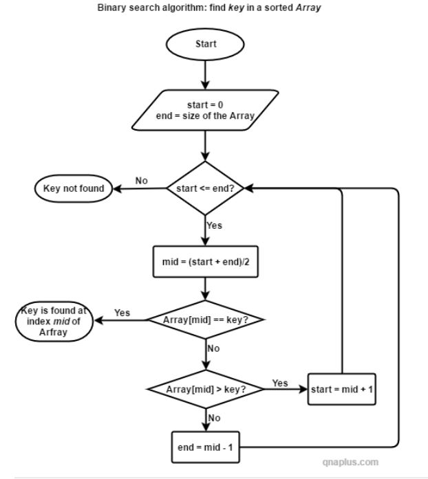

BINARY SEARCH

INTRODUCTION
Binary Search is an efficient algorithm for finding an item from a sorted list of items. It works by repeatedly dividing in half the portion of the list that could contain the item, until you've narrowed down the possible locations to just one.
ALGORITHM
We basically ignore half of the elements just after one comparison.
Compare x with the middle element.
If x matches with middle element, we return the mid index.
Else If x is greater than the mid element, then x can only lie in right half subarray after the mid element. So we recur for right half.
Else (x is smaller) recur for the left half.
CODE
// C++ program for implementation of Binary Searching
#include bits/stdc++.h
using namespace std;
// A iterative binary search function. It returns
// location of x in given array arr[l..r] if present,
// otherwise -1
int binarySearch(int arr[], int l, int r, int x)
{
while (l <= r) {
int m = l + (r - l) / 2;
// Check if x is present at mid
if (arr[m] == x)
return m;
// If x greater, ignore left half
if (arr[m] < x)
l = m + 1;
// If x is smaller, ignore right half
else
r = m - 1;
}
// if we reach here, then element was
// not present
return -1;
}
int main(void)
{
int arr[] = { 2, 3, 4, 10, 40 };
int x = 10;
int n = sizeof(arr) / sizeof(arr[0]);
int result = binarySearch(arr, 0, n - 1, x);
(result == -1) ? cout << "Element is not present in array"
: cout << "Element is present at index " << result;
return 0;
}
OUTPUT
Element is present at index 3
FLOWCHART
